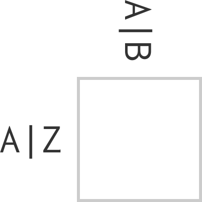
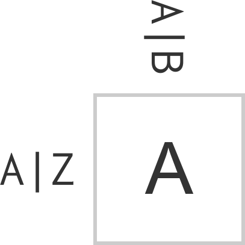
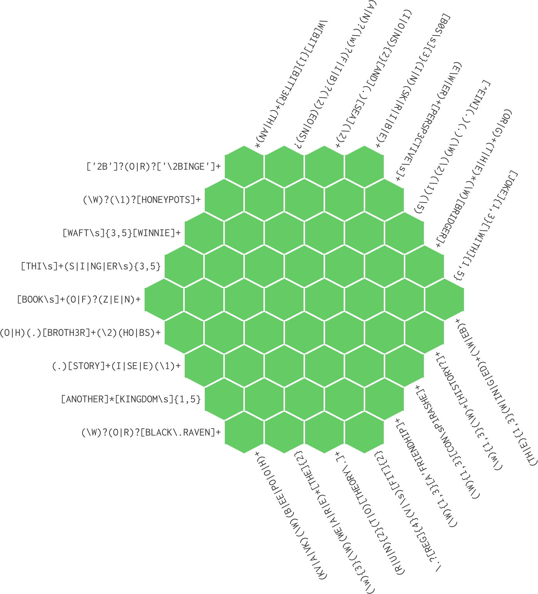
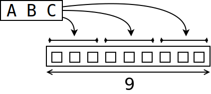
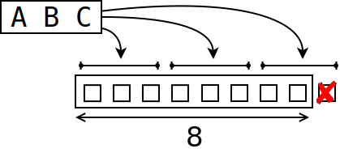
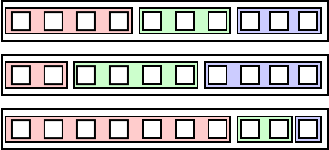

Solving regex crosswords
lvh
Hello!

Solving regex crosswords
Regex Crossword
https://regexcrossword.com
@omichelsen, @mhmichelsen



Completionist
Responsibilities
Clo[js]ure
Crossword?
- more like Sudoku
- backtracking
core.logic!
core.logic
(let [vars (repeatedly 81 lvar)
rows (->> vars (partition 9) (map vec) (into []))
cols (apply map vector rows)
sqs ...]
(run 1 [q]
(== q vars)
(everyg #(fd/in % (fd/interval 1 9)) vars)
(everyg fd/distinct rows)
(everyg fd/distinct cols)
(everyg fd/distinct sqs)))(Go watch anything by Will Byrd)
test.chuck regex parser
(cre/parse "CLO[JS]URE")
{:type :alternation,
:elements
({:type :concatenation,
:elements
({:type :character, :character \C} ...
{:type :class,
:elements
[{:type :class-intersection,
:elements
({:type :class-union,
:elements ({:type :class-base, :chars #{\J}} ...)})}],
:brackets? true}
{:type :character, :character \U} ...)})}A
(defmethod re->goal :character
[{:keys [character]} [lvar]]
(l/== character lvar))A|B
(defmethod re->goal :alternation
[{:keys [elements]} lvars]
(l/or*
(map #(re->goal % lvars)
elements)))A{x,y}, A*, …
(defmethod re->goal :repetition
[{[elem] :elements [lower upper] :bounds} lvars]
(let [n-vars (count lvars)
lower (-> lower (or 0))
upper (-> upper (or n-vars) (max n-vars))]
(if (zero? n-vars)
(if (zero? lower) l/succeed l/fail)
(l/or*
(for [reps (range (max lower 1) (inc upper))
:when (zero? (rem n-vars reps))
:let [group-size (quot n-vars reps)
groups (partition group-size lvars)]]
(l/and* (map (partial re->goal elem) groups)))))))


Concatenation
A B C
↓ ↓ ↓
☐ ☐ ☐A*B*C*?

A*B*C*
(->> [a b c] (apply +) (== 9))
[[0 0 9] [0 1 8] [0 2 7] ...]Hmm
If only…
core.logic.fd!
(defn reduceo ...)
(def sumo (partial reduceo fd/+))
;; (sumo 9 [a b c])Logic all the way down!
🐢🐢🐢🐢…
💥 core.logic 💥
If it’s not working,
you’re not using enough of it
Conclusion
Django
“The web framework for
perfectionists with deadlines.”
core.logic
“The ?web libraryframework for
completionistsperfectionists with responsibilitiesdeadlines.”
World domination
(webservero request response)
Blog post
lvh.io